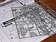

De: La Frikipedia, la enciclopedia extremadamente seria.
De: La Frikipedia, la enciclopedia extremadamente seria. De: La Frikipedia, la enciclopedia extremadamente seria.
|  | ATENCIÓN El autor de este artículo no aprendió geometría en el colegio, ha leído muy pocos libros en su vida y/o no se ha leído las ayudas. Así que es incapaz de producir un texto medianamente maquetado. Por lo tanto es necesario remendar el artículo. |
El Mierda Futbol Club es una selección internacional de futbol profesional de primera división aficionado de séptima regional. Cuenta con muchísimos jugadores pero sus máximas estrellas no son otras que:
-Florian Mader 'Flores de Madera' (Austria Viena): Su infancia fue dura ya que su padre era un madero.
-Kenneth 'Canuto' Vermeer (Ajax): Ha pasado la mayor parte de su vida en la cárcel por posesión de sustancias.
-Daley Blind 'Ciego' (Ajax): Pues no ve porque es ciego. No, no tiene nada que ver con Blind Guardian.
-Thulani Serero 'Sereso' (Ajax): Hermano secreto, malvado y demás del presidente del Atleti de Madriz.
-Behrang Safari (Basilea): Natural de Botswana, acompañaba al rey en sus farras con sus amigos los elefantes. Por desgracia, en un peta del rey, había más cosas y se lió a tiros con los elefantes.
-Marco Streller 'Estrella' (Basilea): Familia de Patricio. No, no conoce a Bob Esponja.
-Marco Amelia 'Amelie, la película'(Milan Antes de Cristo, abreviado AC): Sin comentarios.
-Joel Matip 'Massip' (Schalke 04): Tiene una nariz muy grande. Su tamaño es tal que deberemos analizarla en otro apartado porque aquí no cabe.
-Dennis Aogo 'Ahogo' (Schalke 04): Se ha intentado suicidar en repetidas ocasiones pero no puede ya que le echaron mal de ojo.
-Kapetanos (es el Capitanos del equipo) (Steaua Bucarest): Es el típico griego que tiene nombre gracioso. A pesar de aparentar ser normal, es un agente de la CIA encubierto. Todos sabemos que los nombres griegos terminan en -poulos.
-Anton Ciprian Tatarusanu (no es tatarabuelo sinó Tatarusanu) (Steaua Bucarest): En su familia son especiales
-Bender (Borussia Dortmund Futurama): Indudablemente la estrella del equipo. No hase falta desir nada más.
-Jonas Hofmann (Borussia Dortmund Recreativo Álbum de Fotos): Es el pringao que no sale en las fotos de equipo ya que él es el fotógrafo. Lo marginan.
-Steve Mandanda (O. Marsella): Su sugerente nombre es un intento inútil de ocultar la deshonra que ha causado en su familia. Sus parientes al saber que su pene solo mide 987696 metros lo desheredaron por no llegar al 1000000. Ahora se busca la vida jugando a futbol y siendo Director de cine.
-Brice Samba (O. Marsella Brasilandia): Salió en American Dad. Su papel era de un isleño bailador que llegaba a dictador de la isla. Después de aburrirse de ser dictador, se dedicó al futbol.
Con tanto talento futbolístico, el mundo se dió cuenta de que necesitaban a muchos entrenadores, así que solicitaron los servicios (y los consiguieron) de:
-Primos Lejanos: Los contrataron porque me sale del nabo.
-Los que trabajan en Punto Pelota: Roncero los lideró hasta aquí. Ahora se comen la mierda en sexta regional. ¡VILLARATO!
-Hugo Chávez †: No llego a hacer nada porque los muy gilipollas lo contrataron cuando ya estaba muerto.
-Mister Kat: Mascota del equipo.
-Unos cuantos Bronies: Animadoras cursicutroides del equipo.
-Axel Steel: Creó el himno del equipo. Y el de la ¡Chaaaaaaaampiooooons!
-Habitantes de Figueroles: Los contrataron porque tenían la llamada Paranoia. Enfermedad terrible.
-Tony Tony Chopper: Mister Kat no les terminó de satisfacer.
-Yola Berrocal: Es la encargada de entrenar.
Una vez conformado el equipo y sus técnicos participaron en la recien estrenada Séptima Regional. Allí ganaron el torneo a pesar de hacer solo 0 puntos. He aquí la clasificación.
1. Mierda Futbol Club 0 ptos
Así que subieron a Sexta Regional TEGHDB.
Al subir, la competencia se endureció. Ahora tenían ante si rivales del tamaño de Kocineros Dementes Españoles, La Shoza E La Picsa Equipo Furbo o el durísimo Asociación Deportiva de Yuffie Kisaragi. Perdieron con todos los equipos. El Kocineros regó de sopa el campo y a los del Mierda les dió asco porque parecía lefa. La Shoza E La Picsa Equipo Furbo les pusó porterías rellenas de queso y TNT, algunos no lo contaron. No obstante, quedaron en el puesto 43964 lo que les metía entre las 43965 plazas que daban derecho al ascenso.
Por supuesto, aquí las cosas ya no era mierda de zarigüeya moco de pavo. Contaban con adversarios tan temidos como el legendario Club de Futbol de las Lenguas perdidas de la Historia, famoso por tener un equipo formado exclusivamente por argentinos cuya tarea es hablar hasta dejar al rival inconsciente. Fue un año duro y apenas pudieron salvar la categoría.
Al cabo de 3489 años subieron de categoría.
A estas alturas Tatarusanu ya era Tataratataratataratatarusanu pero seguía hecho mierda por el crack fresco como una rosa.
En ese año se eligió el primer presidente del club. Los socios eligieron a la Zorra de Nueve Colas.
Como era una jeque arabe en tres años el equipo subió 1000 categorías.
Con el dinero que aun sobraba ficharon a:
-Ana Obregón: Para ayudar a Yola Berrocal. La moral del equipo estaba por los suelos.
-Austin Powers: Se quería tirar a toda tía y le dieron permiso. Además hace gracia.
-Hitler: Para acojonar al árbitro. Nein! Nein! NEIN!
-Iñaki Gabilondo: Entrenador del equipo.
-JBL: Les eseñaba las técnicas del maestro Pepe.
-Bush: Para acojonar a Hitler. El muy alemán a veces se pasaba con el árbitro.
Los refuerzos se notaron y en 3,547823946 minutos habían subido 10 categorías más.
En realidad solo hay la Quinta Regional A pero Ratzinger Z compró y modificó el nombre.
Que si, que vuelven a subir.
En realidad es Cuarta División pero la Liga le puso este nombre para que pareciera más humillante para los jugadores. Aquí hay equipos como la Élite de Pinguinos de Madagascar y Andorra C.F. o el Sporting Narcotráfico. Cabe destacar el partidazo contra el Sporting Narcotráfico. En aquel duro partido la hierba estaba alta y dificultaba la velocidad del balón. En un intento de confusión, los del Sporting intentaron poner más rayas de las reglamentarias esparciendo cocaína por el campo. Al final se dió el típico partido de caracoles. Todos por el suelo (esnifando coca) y lentos (por fumar hierba).
Como es habitual volvieron a petarlo y subieron
Como se suprimió la Segunda B y Tercera, subieron directos a Segunda División. Allí había esperandoles los mejores equipos del mundo solo por detrás de otros equipos mejores que aquellos. Todos los equipos era formados por Tribus urbanas de Bogotá.
Ganaron todos los títulos que podían ganar y les dieron permiso para que Mandanda se meará con su falo hiperespaciosesquisoidaloidesectumsemprante (pero deshonroso en su familia) en la cara de Guardioleaks.
Al final todos los jugadores tuvieron un trofeo.
Mejor cuidador de la carpintería: Florian Mader
Mejor holandés con nombre gracioso: Kenneth Vermeer 'Vermut' (Aquí ya no es canuto, le da a las vitaminas.
Mejor discapacitado: Daley Blind 'Ciego'
Mejor jardinero: Thulani 'Tulipani' Serero (también es holandés)
Mejor guía turístico: Bethang Safari
Mejor jugador que se llame Marco: Marco Streller
Mejor transexual: Marco Amelia
Premio Ibrahimovic a la mejor nariz del futbol: Joel Matip 'Massip'
Mejor suicidio sin sangre: Dennis Aogo 'Ahogo'
Premio Cuñado Sin Gracia a la manera más graciosa de decir Capitán: Kapetanos
Mejor jugador de la tercera edad: Anton Ciprian Tatarusanu
Mejor jugador dibujado por Matt Groening: Bender
Mejor fotógrafo: Jonas Hoffman
Mejor jugador con un pene más largo que 34987 metros: Steve Mandanda (pero su pene es deshonroso)
Mejor celebración-baile: Brice Samba (por el famoso baile de la conga rusa. Juego enque bailan una conga en círculo y una cuchilla mata aleatoriamente a alguien. Variante de la ruleta rusa.
Jugador más nazi: Bush
Jugador no tan nazi pero aun así es muy nazi: Hitler
Jugador más tetudo: Ana Obregón
Jugador que más ha salido en Austin Powers: Austin Powers
Jugador más violento y luchador: Iñaki Gabilondo
Mejor nombre corto/abreviatura: Milan AC (AC= Antes de Cristo9
Nombre corto/abreviatura no tan bueno: JBL
Tras el éxito rotundo, todos se volvieron adictos al Lilo & Stich, a ser Putoteh y a Tokio. Hoy en día el equipo sigue en un bucle ya que volvieron a la Séptima Regional y todos los jugadores se rehabilitaron y volvieron a Primera y ganaron y se mearon en la cara de Guardiola y etc.
-Sonic The Hedgehog: Les odia porque ficharon a Austin Powers.
-Pastafarismo: Se quejaron de que el equipo hacía apología de falsas religiones. No respetando así la verdadera.
-El Sheriff Lobo: Se aburría.
-Huéscar: Son muy rabisos.
-Cangrejos: No tolera que el hermano de Patricio esté en el equipo, pero el Señor tacaño Cangrejo, no.
-May: Pensaba que le darían el puesto de Ana y Yola.
-Hot Action Cop: Denunciaron que ellos también estaban en Séptima Regional pero les ignoraron
-Hitler: Él odia a todo el mundo.
-Chaly: Él tiene buen gusto.
-Campamentos: Se indignaron porque no trataban a Yola y Ana como campamentos.
-Ambulancias: Se quejaron de que a los aficionados del Mierda les daban embolias al ver jugar a una mierda de equipo tan grande.
-PC Fútbol: Tuvieron que indemnizar a los que jugaron con el Mierda y se traumatizaron.
Autor(es):